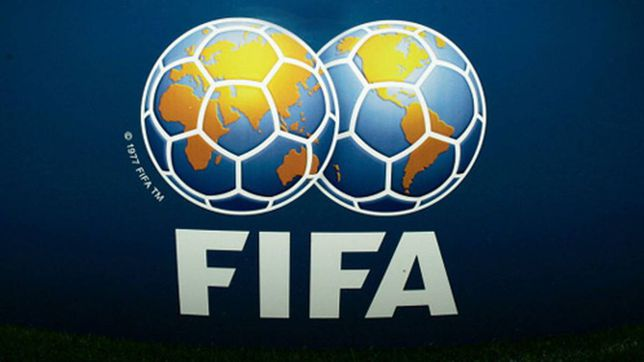

La Copa Mundial de Fútbol de la FIFA Catar 2022 (en árabe, كأس العالم لكرة القدم قطر 2022) será la XXII vigésimo segunda edición de la Copa Mundial de Fútbol masculino organizada por la FIFA. Esta edición se realizará desde el 21 de noviembre al 18 de diciembre de 2022 en Catar, que consiguió los derechos de organización el 2 de diciembre de 2010.1
Esta será la tercera vez que la Copa del Mundo de la FIFA se disputará en el continente asiático tras la Copa Mundial de Fútbol de 2002 en Corea del Sur y Japón y el de Rusia 2018 (aunque esta última contaba con una única sede en territorio asiático), y la primera que se celebra en Asia Occidental, dada la ubicación euroasiática de la que gozaba el anterior anfitrión: Rusia.2
También por primera vez, el torneo tiene lugar en Oriente Próximo, en un país árabe y de mayoría musulmana, así como el de menor extensión territorial.3

La FIFA existe para gobernar el fútbol y desarrollar el juego en todo el mundo. Desde 2016, la organización ha evolucionado rápidamente hasta convertirse en un organismo que puede servir de manera más eficaz al fútbol en beneficio de todo el mundo.
La nueva FIFA está modernizando el fútbol para que sea global, accesible e inclusivo en todos sus aspectos. No solo en uno o dos continentes, sino en todas partes.
Bajo nuestra visión de hacer que el fútbol sea verdaderamente global, ayudaremos a desarrollar el fútbol en cualquier lugar para que haya al menos 50 selecciones nacionales y 50 clubes de todos los continentes que puedan competir al más alto nivel.
Institucion Educativa Distrital Liceo Samario
Alejandro Alvarado Rueda
Grado: 10 - 02